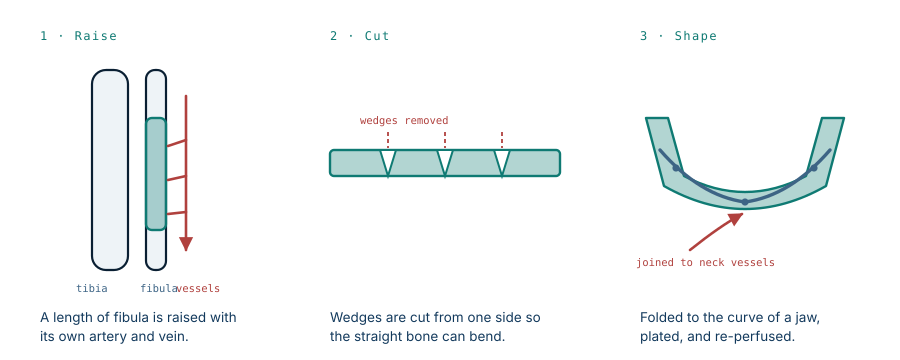

Twenty operations rebuilt his jaw. None of them gave him a face.
Over fifteen years, surgeons rebuilt Richard Norris's jaws twice using bone taken from his own legs. The reconstruction worked. He still spent those years behind a surgical mask, leaving the house at night.
- Specialty
- Plastic, reconstructive and maxillofacial surgery
- Patient
- Man, 22 at injury in 1997, 37 at transplant
- Injury
- Ballistic facial injury; loss of nose, lips, both jaws, part of the tongue
- Before transplant
- Over 20 major reconstructive procedures, including 2 free fibula transfers
- Transplant
- March 2012, University of Maryland Medical Center
- Operating time
- 36 hours
- Later complication
- Kidney failure from immunosuppression; kidney transplant in 2019
- 1997the injury
- 15 years20+ operations
- 201236-hour transplant
- 2016–19kidneys fail
What autologous reconstruction can do
The standard approach to a destroyed jaw is to build a new one from the patient's own body, and the workhorse for it is the fibula — the slender outer bone of the lower leg. It can be removed along most of its length without the leg losing function, because the tibia carries the weight.
The technique is more ingenious than it sounds. The surgeon raises a segment of fibula together with its own artery and vein, cuts wedges out of one side, and folds the straight bone closed at those cuts until it matches the curve of a jaw. It is plated in position, and its vessels are joined to vessels in the neck, so the transplanted bone arrives with a blood supply and stays alive rather than sitting there as dead scaffolding.

He had it done twice. His jaws were rebuilt. He could not be given lips, a nose, or the ability to make an expression, because there is nowhere on the body to borrow those from.
The ceiling
This is the limit that defines the whole field. Autologous reconstruction restores structure. It can give a patient a jaw that occludes, a nasal airway, coverage over exposed bone. What it cannot restore is a face, because a face is not structure. It is thin mobile skin over dozens of small muscles wired to specific nerves, and no flap taken from a thigh or a forearm behaves that way.
Norris lived the difference. Reconstructed, functional, and unable to go out. He wore a mask in public for fifteen years, including on the day he came in for the transplant. His surgeon had first taken on his case in 2005, and eventually concluded that no further conventional operation would change his situation.
What a face transplant actually is
Facial transplantation belongs to a category called vascularized composite allotransplantation: transplanting a block of several tissue types at once — skin, fat, muscle, nerve, bone, cartilage, blood vessels — as a single living unit, rather than a single organ.
The operation in March 2012 ran 36 hours. It replaced everything from the hairline to the collarbone: both jaws with the donor's teeth still in them, the tongue, and the overlying skin with its muscles, nerves and vessels. Within a week he could move his jaw and tongue, open and close his eyes, brush his teeth and shave. He had regained his sense of smell, lost since the injury.
Function returned more slowly than appearance, and for a reason worth stating: severed nerves regrow at roughly a millimetre a day. Sensation and movement across a transplanted face arrive over months, in the order the axons reach their targets.
The part that is not like other transplants
Here is the distinction that makes this case ethically different from a heart or a liver, put most clearly by the psychiatrist on the transplant team: most transplant recipients accept the risks of surgery in order to stay alive. A face transplant recipient accepts them to treat something that is not going to kill him.
Norris's mother recalls being told her son had roughly a fifty-fifty chance of surviving the operation. She told him the family loved him as he was — and that the decision was his.
What is being traded is not comparable to a scar or a stiff joint. It is a life spent unable to enter a room. His surgeon's summary of how patients weigh it is blunt: ask them, and they will tell you it is worth the risk.
The price, paid later
A transplanted face is foreign tissue, and the immune system attacks it for the rest of the recipient's life. The drugs that prevent this are not benign. They raise the risk of infection and of certain cancers, and several of the most effective are toxic to the kidneys.
By 2016, Norris's kidney function was declining. By 2018 he was being worked up for a kidney transplant, with his doctors trying to find a living donor before he needed dialysis. He ended up on dialysis for months, and received a kidney in 2019 — at the same hospital that had given him the face seven years earlier.
The sequence is the honest version of this story. The face was not the end of the treatment. It was the beginning of a second, permanent medical problem, and one that in his case required another transplant to manage.
The donor
The face came from Joshua Aversano, 21, killed after being struck by a vehicle. His family consented to donation, and his organs saved five other people on the same day.
Norris later met Joshua's sister. Her description of the encounter is the most precise thing anyone has said about what this operation does: she said she could see her brother in him, and could not tell where her brother ended and he began.
This is a live question in the field, and it does not have a settled answer. A transplanted face does not make the recipient look like the donor, because the underlying bone shapes the result — but it does not leave the donor entirely behind either.
Afterwards
Norris described looking in the mirror and seeing himself. He regained speech and expression, went back out in public, took online courses, and began speaking with other patients facing catastrophic facial injuries — on the grounds that he had been where they were.
What this case teaches
The twenty operations were not failures. They rebuilt a jaw from a leg bone, which is a remarkable thing to be able to do, and they kept him alive and functioning. They simply could not solve the actual problem, because the actual problem was not structural. Face transplantation solves it, at the cost of lifelong immunosuppression and everything that follows from it — in this case, a second organ failure and a second transplant. That is not an argument against the operation. It is what the operation costs, and it is paid over decades rather than in theatre.
Written from published surgical literature on tooth-bearing maxillomandibular facial transplantation and from contemporaneous reporting by the University of Maryland Medical Center, the Associated Press and others. Clinical photographs of this patient are held by the University of Maryland Medical Center and are not reproduced here. Details reflect reporting up to the 2019 kidney transplant. The diagram is original to MedicaseHub and may be reused freely. This article is not medical advice. Read the full disclaimer.